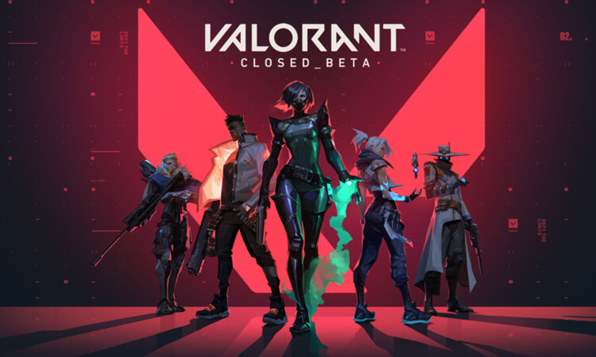

VALORANT


GenresTactical Shooter |
FeaturesCo-Op, Competitive, Controller Support, Multiplayer, Single Player |
MoreValorant is a team-based first-person tactical hero shooter set in the near future. Players play as one of a set of Agents, characters based on several countries and cultures around the world.[6] In the main game mode, players are assigned to either the attacking or defending team with each team having five players on it. Agents have unique abilities, each requiring charges, as well as a unique ultimate ability that requires charging through kills, deaths, orbs, or objectives. Latest Update!VALORANTEvery player starts each round with a "classic" pistol and one or more "signature ability" charges. Other weapons and ability charges can be purchased using an in-game economic system that awards money based on the outcome of the previous round, any kills the player is responsible for, and any objectives completed. The game has an assortment of weapons including secondary guns like sidearms and primary guns like submachine guns, shotguns, machine guns, assault rifles and sniper rifles. Spike Rush In the Spike Rush mode, the match is played as best of 7 rounds - the first team to win 4 rounds wins the match. Players begin the round with all abilities fully charged except their ultimate, which charges twice as fast as in standard games. All players on the attacking team carry a spike, but only one spike may be activated per round. Guns are randomized in every round and every player begins with the same gun. Ultimate point orbs in the standard game are present, as well as multiple different power-up orbs. Swift Play Swiftplay matches are simply a shortened version of the Unrated game mode. 10 players are split into 2 teams, attackers and defenders. Attackers must plant the spike while the Defenders must stop them. What differs Swiftplay to Unrated is that it is best to 9 rounds - the first team to win 5 rounds wins the match. On round 4, the team's players switch, as they would do in round 7 in the Unrated game mode. The game's currency system has no changes from Unrated. Swiftplay is meant as a quick game mode, averaging around 15 minutes per game, as opposed to around 40 minutes for Unrated. Competitive Competitive matches are the same as unranked matches with the addition of a win-based ranking system that assigns a rank to each player after 5 games are played. Players are required to reach level 20 before playing this mode. In July 2020, Riot introduced a "win by two" condition for competitive matches, where instead of playing a single sudden death round at 12-12, teams will alternate playing rounds on attack and defense in overtime until a team claims victory by securing a two-match lead. Each overtime round gives players the same amount of money to purchase guns and abilities, as well as approximately half of their ultimate ability charge. |